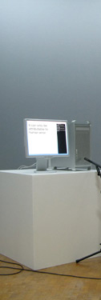
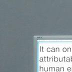
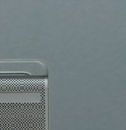

APPLE TALK
Jürg Lehni, 2002 / 2007
Apple Talk confronts two Macintosh computers with the imperfections of verbal communication. Using two microphones, text-to-speech and voice recognition software, the two machines continuously transform written sentences into spoken words and back into written form in an endless loop, leaving room for error and automatic interpretation.
With its similarities to the Telephone game (somewhat offensively called Téléphone Arabe in France, and Chinese Whispers in England), it results in a constant permutation of text and a production of poetic errors and leftovers.
The first version of the installation was created by Jürg Lehni as a contribution to a group project with Franz Hoffman, Pierre Terrier and Jerome Rigaud at ECAL in 2002, entitled Analog Information. An entirely new version was created in 2007 for the exhibition Man-[in the]-Machine at ZKM, Karlsruhe, with texts selected with the German writer Stephan Krass.
Besides the software iListen, which is used for dictation, the installation makes use only of standard system components, while the actual software hides behind the scenes. The dictated text apears in large letters in TextEdit.app, typeset in Helvetica, while the Unix Terminal displays a log file of previous sentences.

"Apple Talk"
Man-[in the]-Machine, ZKM, Karlsruhe, 2007


"Apple Talk"
Man-[in the]-Machine, ZKM, Karlsruhe, 2007